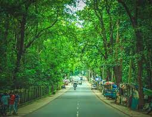
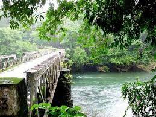

Malappuram is a city in the Indian state of Kerala, spread over an area of 58.20 km². The first municipality in the district formed in 1969, Malappuram serves as the administrative headquarters of Malappuram district. Divided into 40 electoral wards, the city has a population density of 1,742 per square kilometre.
Main Attractions
Nilambur Teak Museum
The museum, a two-storey building, is the world's first teak museum and is operated by the Kerala Forest Research Institute. The exhibits include comprehensive information on aspects of the use of teak in their exhibits and articles on the subject. The museum provides extensive information of value historically, artistically and scientifically.

Nedumkayam
Nedumkayam rainforest forms a part of the Nilgiri Biosphere Reserve and is one of the best places to visit in Malappuram. One of the beautiful and dense forests in Kerala with a splendid variety of flora and fauna this area is ideal for trekking. A 3 hours trek will take you to Mundakadav waterfalls, one of the most beautiful ones in this region. On the way, you can see numerous elephants freely roaming. If you are lucky you also watch them playing in the waters of Chaliyar. Leave yourself to nature here and stroll around to watch new life sprouting here.

Kadalundi Bird Sanctuary
The Kadalundi Bird Sanctuary lies at Balathiruthi Islands in Vallikkunnu Grama Panchayat of Malappuram district in Kerala, India. It spreads over a cluster of islands where the Kadalundipuzha River flows into the Arabian Sea. The Sanctuary hill is around 200 m above sea level.